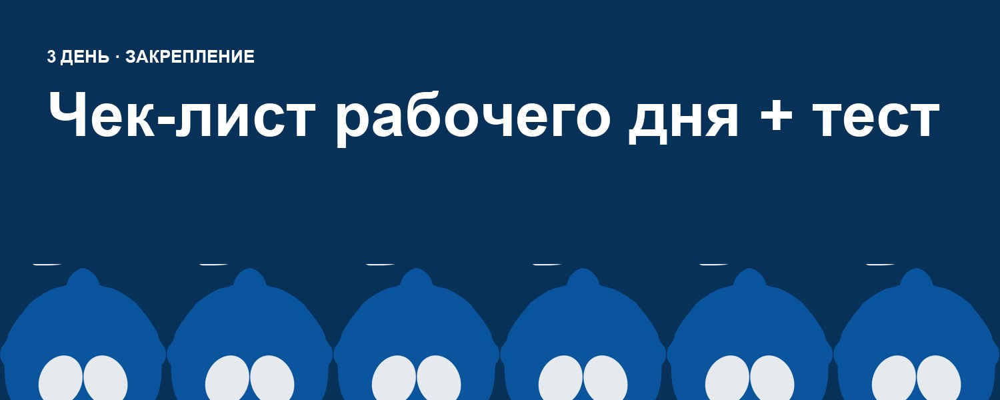
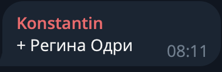
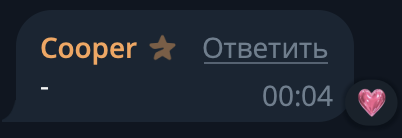
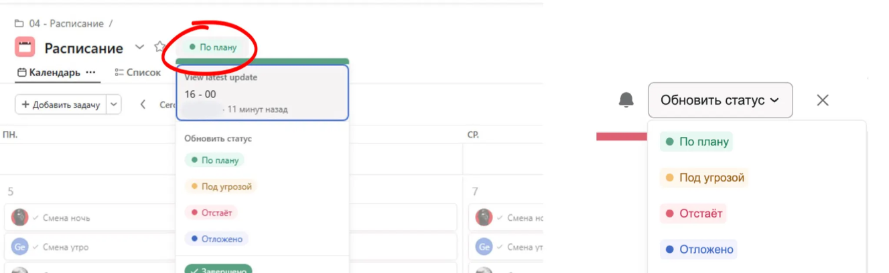
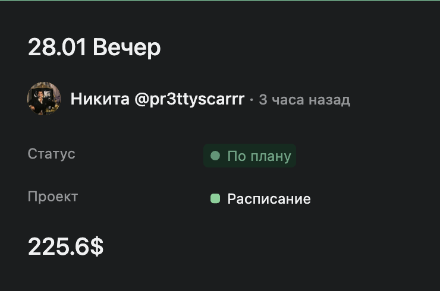

9 урок. Чек-лист рабочего дня + тест
НАЧАЛО СМЕНЫ
- Ровно в назначенное время выйти на смену и поставить в чат “смены” + имена моделей

- Ответить на входящие сообщения
- Проверить новых мемберов с прошлой смены все ли обработаны и обработать
- Запустить рассылку (удалить прошлую)
- Написать от руки мемберам в листе No mass dm (проверить можно ли им писать)
В ТЕЧЕНИИ СМЕНЫ
Каждое новое сообщение не должно оставаться без ответа дольше 5–10 минут.
Каждый новый подписчик должен быть обработан в течение 10-15 минут после подписки. В исключительных случаях допускается задержка до 15–20 минут, если есть объективные причины.
- Каждое новое сообщение — не дольше 5–10 минут без ответа
- Каждый новый подписчик — обработан в течение 10 минут Прочитать описание профиля фана и использовать это в приветственном сообщении
- Добавить новых фанатов в соответствующие списки
- Прописать имя (хобби, возраст, страна) и основные фетиши
- Все важные детали и поведение — в заметках
- Перед любым сообщением — проверять заметки
- Бесплатная рассылка на всех — интересный текст с вопросом
- Повтор рассылки через 1–2 часа (смотря какой актив), минимум 2–3 раза за смену
- Работать с фанами по приоритету
- Отвечать креативно и с вовлечением
- Поддерживать активные диалоги, не бросать их
- Если нет сменщика — пожелать спокойной ночи всем активным
- Обновлять списки, если фан проявляет новые интересы или делает покупку
- Сегментировать фанатов вручную, добавлять “хз” или $ в ник
- Добавить новых покупателей в “платящие”
- Обновить заметки по ключевым диалогам
- Отметить, если фан запросил кастом, но не оплатил
В КОНЦЕ СМЕНЫ
- Почистить список “общаюсь”
- Поставить - в чат “смены”

- Сделать отчёт в Asana СРАЗУ после смены
(если отчет придет через 2-3 часа после окончания смены его проверять не будут и в зп он не идет) - Зайти в смену дискорд-сервера и передать информацию о смене другому оператору’
Как делать отчет?
fanpilot.org - это наш портал, где выгружаются ВСЕ транзакции со всех страничек.
Почты + пароли для него выдает тимлид (их надо запросить ДО смены). ё
Процесс закрепления продаж за собой прост, у вас есть две кнопки:
claim - забрать продажу себе
divide - разделить продажу с другими чаттерами, вы сможете выбрать конкретного.
При случайном клэйме вы разумеется его можете отменить (это отслеживается)
Также в меню слева есть специальный генератор отчетов для вас, система автоматически подсчитает ваши продажи за смену и выдаст тотал. Ваша задача - только ввести этот тотал в асане в статусы
Как сделать отчет в асана? 👇🏻


1. Сверху расписания наводим на менюшку, где сейчас написано "по плану" и выбираем далее из списка "Обновить статус"
2. Нажми:
- Тыкаем "по плану", если смена от 150$
- Тыкаем "под угрозой", если сумма от 50$ до 149$
- Тыкаем "отстает", если меньше 50$
3. Указываем в заголовке дату и какая смена - утро/вечер/ночь
4. Пишем общую сумму продаж
5. Жмем "отправить справа сверху”
*Если чек красный пишем пару слов, что было не так на смене. Например плохой актив или много бомжей
(кликабельно)